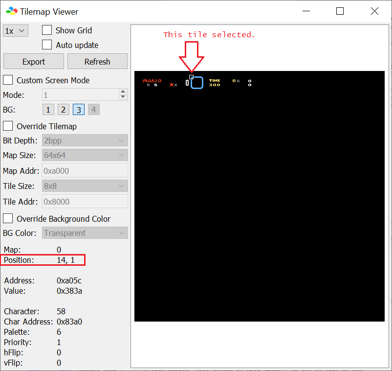

RAM address $7E0EF9-$7E0F2E controls what tile to display. How do you modify it? Well you edit the contents in the mentioned RAM address. There are 2 ways you can edit RAM addresses:
So you want to edit the HUD to display custom info to the player. Obviously, this requires at least basic ASM knowledge. Fear not! Once you got the pattern down, you'll understand how it works!
You should know these before doing this:
Ersanio's tutorial[1][2] on something simple as how to write a value to memory. You should also know about binary and hexidecimal, since many data explained here store in memory are bitwise.
Understand the mechanics of Asar, such as defines and labels.
I have provided several routines to make writing codes much user-friendly as possible. So lets begin.
Here, consider looking at this image:
RAM address $7E0EF9-$7E0F2E controls what tile to display. How do you modify it? Well you edit the
contents in the mentioned RAM address. There are 2 ways you can edit RAM addresses:


Now hold up, when you play around with the tiles, many tiles will use the wrong palette, well, this is part of the tile properties (in binary, its %YXPCCCTT) that's hard-coded, that's right, there are actually 2 bytes of information for each 8x8 tile with the tile numbers being in ROM and RAM and the properties all being hardcoded. When the level loads, the status bar routine will first transfer default tile number and properties from ROM addresses $008C81-$008CFE, which contains all the tiles for the status bar, while the RAM itself only contain some of the tile numbers. To modify hardcoded tiles, I've already presented their addresses that directly correlates to the RAM addresses, for the top and bottom lines of the item box:
| Coordinate | Address (%TTTTTTTT, %YXPCCCTT) |
|---|---|
| Top line of item box | |
| (14,1) (($E,$1)) | $008C81, $008C82 |
| (15,1) (($F,$1)) | $008C83, $008C84 |
| (16,1) (($10,$1)) | $008C85, $008C86 |
| (17,1) (($11,$1)) | $008C87, $008C88 |
| bottom line of item box | |
| (14,4) (($E,$4)) | $008CF7, $008CF8 |
| (15,4) (($F,$4)) | $008CF9, $008CFA |
| (16,4) (($10,$4)) | $008CFB, $008CFC |
| (17,4) (($11,$4)) | $008CFD, $008CFE |
You may be wondering, why did I include the tile coordinate in these tables? Well, is because of bsnes+'s ability to display the tile coordinates in the tilemap viewer (Debugger → S-PPU →
Tilemap Viewer, and select “3” on the BG.):

and then you can use that coordinate and CTRL+F here on this HTML file to locate what RAM/ROM address to modify, which is way easier than to trial-and-error modifying each address to find the desired location.
I've also provided a patch, DefaultTiles.asm which is intended to be an ASM patch version of the SMW status bar editor tool.
As explained earlier about the palette issue, and that each 8x8 tile possess 2 tiles, I'll give you a summary of the entire tile data:


| TileNumber and Props in their own table | 2-bytes together | |||
|---|---|---|---|---|
Tile numbers and properties are stored in 2 separate tables, one for each. Every time you advance the next byte, you are on the next 8x8 tile. |
Every tile have 2 bytes placed one after another, so both tile numbers and properties are alternating every byte. Therefore, to get to the next 8x8 tile, is a move of 2 bytes instead of one. |
Because SMW's status bar is extremely limited, other users decided to make status bar patches:
Super Status Bar. This gives you a 32x5 8x8 tile area, therefore 160 8x8 tiles to edit.1
Overworld Border +. Not a “status bar”, but similar in terms of editing the layer 3 8x8 tiles. This gives you 32x!TopLines (for the top of the screen) and 32x!BottomLines (for the bottom of the screen) 8x8 tile area, therefore, up to 224 8x8 tiles you can edit.1. !TopLines is how many lines for the top of the screen, an integer 0-5. !BottomLines is same as previously mentioned, but for the bottom of the screen being an integer 0-2.
Ladida's status bar patches2
Minimalist Status Bars. This shrinks your status bar to 1 or 2 lines of 8x8 tiles. Therefore, 32 or 64 tiles you can edit.
SMB3 Status Bar. True to the name, this replaces SMW's HUD with SMB3's HUD on the bottom of the screen. This gives you a 32x4 8x8 tile area, therefore 128 8x8 tiles to edit
You may be wondering:
Thankfully, I made HTML Javascript files for all of these ASM resources to enable you to search what RAM address of a given tile.
This method assumes you are using uberasm tool to test your code to write to the status bar. The first thing you want to do is have all the ASM files in “StatusBarRoutines” inserted into uberasm tool's “library” folder, and have the entire folder “StatusBarRoutinesDefines” be in the same directory as the uberasm tool exe program is at.
Before we start using the subroutines, we will demonstrate how to write tiles that change based on a given info !RAMToMeasure. It's very easy to write a tile that is different depending on a condition using branches:
!StatusBarPosition = $0EF9|!addr !RAMToMeasure = $60 main: LDA !RAMToMeasure BEQ + LDA #$00 BRA ++ + LDA #$01 ++ STA !StatusBarPosition RTL |
!StatusBarPosition = $0EF9|!addr !RAMToMeasure = $60 main: LDA !RAMToMeasure TAX LDA Table,x STA !StatusBarPosition RTL Table: db $xx ;>When !RAMToMeasure = $00 db $xx ;>When !RAMToMeasure = $01 db $xx ;>When !RAMToMeasure = $02 |
But what about other not-so-simple displays? Well, the following shows you how to do that.
To display a single digit, just store the value directly to the tile RAM. Digits are correctly displayed if the value is 0-9. Any above that will display more than just digits.
But how do you display multi-digits on the status bar? Well, you use a routine that would wrap each digits just like how our real-world decimal number works (ones place reset every 10s, 10s increases every 10th value, and the 10s resets every 100). The routine, HexDec converts a given number to binary-coded decimal (BCD, unpacked) to write each digit tiles onto the status bar. Thankfully, the status bar graphic tiles on GFX28 starts with digits 0-9 so you don't have to convert digit numbers to digit graphics.
For the overworld border (assuming you're using the Overworld Border+ patch), which is stored in GFX2A, after calling the HexDec routine, you must add each digit by #$22 (digit graphics are stored as tile numbers $22-$2B), and make sure you are using page 1 and not 0 on the tile properties (example, to display the number “12”, the values must be $01+$22 = $23 for the tens and $02+$22 = $24 for the ones).
Create a text file, name it StatusBarTest.asm. Edit that text file to include this code:
!RAMToMeasure = $60 ;>RAM address you what to show !StatusBarPosition = $0EF9|!addr ;>Where to write on the status bar incsrc "../StatusBarRoutinesDefines/Defines.asm" main: LDA !RAMToMeasure JSL HexDec_EightBitHexDec STA !StatusBarPosition+(1*!StatusbarFormat) ;>Write 1s place TXA ;>if you are using status bar patches, STX $xxxxxx will not work. STA !StatusBarPosition ;>Write 10s place RTL |
Now save, and insert in either as gamemode under number 14 (level), or level. Then run the tool to apply the changes.
Test the game (using a debugger, bsnes+) by going to the level that you inserted this created ASM file (or any level if using gamemode 14), you should see the digits displayed on the HUD. Again, palettes, X/Y flips and other weird shenanigans can happen if you use SMW's vanilla status bar without editing the default values. Now depending on what RAM to use set by !RAMToMeasure, it could display 00 or [<digits 0-9 or glitched tile here><digits 0-9>], then on the debugger window, go to memory editor and search for the RAM you set for !RAMToMeasure (example: 60), edit the value in that byte to be any values $00-$63. It should display their decimal version of the hex number:
| Hex bytes | Displayed |
|---|---|
| $09 | 09 |
| $0A | 10 |
| $0B | 11 |
| ... | |
| $61 | 97 |
| $62 | 98 |
| $63 | 99 |
| $64 | A0 |
| $65 | A1 |
| $66 | A2 |
| (10s place digit cycles through the alphabet characters every 10th value until...) | |
| $FF | P5 |
You can fix this problem and make it allow the full range of the 8-bit value by after writing the ones digit, TXA, then call the routine again, and after that, A is the 10s, and X is the 100s place:
!RAMToMeasure = $60 ;>RAM address you what to show !StatusBarPosition = $0EF9|!addr ;>Where to write on the status bar incsrc "../StatusBarRoutinesDefines/Defines.asm" main: LDA !RAMToMeasure JSL HexDec_EightBitHexDec STA !StatusBarPosition+(2*!StatusbarFormat) ;>Write 1s place TXA ;>Call again to get the 10s and 100s. JSL HexDec_EightBitHexDec STA !StatusBarPosition+(1*!StatusbarFormat) ;>Write 10s place TXA ;>STX $xxxxxx don't exists. STA !StatusBarPosition ;> Write 100s place RTL |
Do note that this method have a cost: The higher the number to convert to BCD, the more subtractions by 101 → (NumberOfDigits-1) it would take to get all the digits outputted, not really harsh since this is 8-bit, so up to 25 iterations for a 2-digit (plus up to 2 more for 10s and 100s by calling the HexDec routine again). However, if you DO want speed, do this instead. This works from left-to-right by repeatedly subtracting 100 until A is 0-99. The number of subtractions is now how many 100s for the 100s digit, after that, with A being 0-99, we do the same but with 10s (how many 10s) instead of 100s to find how many 10s. After that, A is 0-9 which is already the ones place:
!RAMToMeasure = $60 ;>RAM address you what to show !StatusBarPosition = $0EF9|!addr ;>Where to write on the status bar incsrc "../StatusBarRoutinesDefines/Defines.asm" main: LDA !RAMToMeasure JSL HexDec_EightBitHexDec3Digits ;>Obtain 3 digits in A, X and Y. STA !StatusBarPosition+(2*!StatusbarFormat) ;>Write 1s place TXA ;\Write 10s place STA !StatusBarPosition+(1*!StatusbarFormat) ;/ TYA ;\Write 100s place. STA !StatusBarPosition ;/ RTL |
What about if I wanted to convert 16-bit numbers (or if you have 3-4 digits and want to go above 255)? Well, good news for you, I've provided more than just 8-bit HexDec converters. Here is the code in question (up to 65535). Example, RAM $60 contains the value $1234 (in memory, its $34, $12), I call the routine SixteenBitHexDecDivision after that, the digits of 4660 are stored. Note that this is ordered in decreasing significant decimal digits (last byte = 1s, second-last = 10s...):
| Define relative address | RAM address (normal/Sa-1) | Output value |
|---|---|---|
| !HexDecDigitTable+0 | $02/$04 | $00 (represents “0” for 10000s place) |
| !HexDecDigitTable+1 | $03/$05 | $04 (represents “4” for 1000s place) |
| !HexDecDigitTable+2 | $04/$06 | $06 (represents “6” for 100s place) |
| !HexDecDigitTable+3 | $05/$07 | $06 (represents “6” for 10s place) |
| !HexDecDigitTable+4 | $06/$08 | $00 (represents “0” 1s place) |
!RAMToMeasure = $60 ;>RAM address you what to show
!StatusBarPosition = $0EF9|!addr ;>Where to write on the status bar
!NumberOfDigitsDisplayed = 5 ;>How many digits, enter 1-5 (pointless if you enter less than 3).
incsrc "../StatusBarRoutinesDefines/Defines.asm"
;Don't change this.
if defined("sa1") == 0
if read1($00FFD5) == $23
!sa1 = 1
sa1rom
else
!sa1 = 0
endif
endif
!HexDecDigitTable = $02
if !sa1 != 0
!HexDecDigitTable = $04
endif
main:
REP #$20
LDA !RAMToMeasure
STA $00
SEP #$20
JSL HexDec_SixteenBitHexDecDivision
;Write to status bar
if !StatusbarFormat == $01
LDX.b #(!NumberOfDigitsDisplayed-1)
-
LDA.b !HexDecDigitTable+$04-(!NumberOfDigitsDisplayed-1),x
STA !StatusBarPosition,x
DEX
BPL -
else
LDX.b #((!NumberOfDigitsDisplayed-1)*2)
LDY.b #(!NumberOfDigitsDisplayed-1)
-
LDA.w (!HexDecDigitTable)+$04-(!NumberOfDigitsDisplayed-1)|!dp,y
STA !StatusBarPosition,x
DEY
DEX #2
BPL -
endif
RTL |
Greater than 65535? (unlikely for other stuff besides a huge currency counter or custom score). This one is a 32-bit HexDec, up to
4,294,967,295 ($FFFFFFFF) can be properly displayed. Remember, this is little endian, for example: a number
$11223344 must be inputted as
[$44, $33, $22, $11] into $00-$03 and should output as [$02, $08, $07, $04, $05, $04, $00, $02, $00] in
!Scratchram_32bitHexDecOutput.
Here is an example using the previously mentioned number, with !MaxNumberOfDigits set to 9, using default !Scratchram_32bitHexDecOutput.
Again, the digits stored in each bytes are ordered in decreasing significant decimal digits (last byte is always
the 1s place, regardless of !MaxNumberOfDigits's value)
| Define relative address | Default RAM address (normal/Sa-1) | Output value |
|---|---|---|
| !Scratchram_32bitHexDecOutput+0 | $7F844E/$40019C | $02 (represents “2” for 100000000s) |
| !Scratchram_32bitHexDecOutput+1 | $7F844F/$40019D | $08 (represents “8” for 10000000s) |
| !Scratchram_32bitHexDecOutput+2 | $7F8450/$40019E | $07 (represents “7” for 1000000s) |
| !Scratchram_32bitHexDecOutput+3 | $7F8451/$40019F | $04 (represents “4” for 100000s) |
| !Scratchram_32bitHexDecOutput+4 | $7F8452/$4001A0 | $05 (represents “5” for 10000s) |
| !Scratchram_32bitHexDecOutput+5 | $7F8453/$4001A1 | $04 (represents “4” for 1000s) |
| !Scratchram_32bitHexDecOutput+6 | $7F8454/$4001A2 | $00 (represents “0” for 100s) |
| !Scratchram_32bitHexDecOutput+7 | $7F8455/$4001A3 | $02 (represents “2” for 10s) |
| !Scratchram_32bitHexDecOutput+8 | $7F8456/$4001A4 | $00 (represents “0” for 1s) |
!RAMToMeasure = $60 ;>RAM address you what to show
!StatusBarPosition = $0F09|!addr ;>Where to write on the status bar
incsrc "../StatusBarRoutinesDefines/Defines.asm"
;When handling the number of digits, be careful not to have !NumberOfDigitsDisplayed be greater than !MaxNumberOfDigits
;(the number digits stored in each byte in !Scratchram_32bitHexDecOutput), else garbage will appear.
!NumberOfDigitsDisplayed = 9 ;>How many digits, enter 1-10 (pointless if you enter less than 5).
;Don't change this.
if defined("sa1") == 0
if read1($00FFD5) == $23
!sa1 = 1
sa1rom
else
!sa1 = 0
endif
endif
main:
REP #$20
LDA $60 ;\Low word (example: $3344 -> [$44, $33] in $00, $01)
STA $00 ;/
LDA $62 ;\High word (example: $1122 -> [$22, $11] in $02, $03)
STA $02 ;/
SEP #$20
JSL HexDec_Convert32bitIntegerToDecDigits ;>Should Output example as: [$02, $08, $07, $04, $05, $04, $00, $02, $00] on !Scratchram_32bitHexDecOutput.
;Write to status bar:
if !StatusbarFormat == $01
LDX.b #(!NumberOfDigitsDisplayed-1)
-
LDA !Scratchram_32bitHexDecOutput+(!MaxNumberOfDigits-1)-(!NumberOfDigitsDisplayed-1),x
STA !StatusBarPosition,x
DEX
BPL -
else
LDX #((!NumberOfDigitsDisplayed-1)*2)
LDY #(!NumberOfDigitsDisplayed-1)
-
PHX
TYX ;>Sigh, LDA $xxxxxx,y does not exist.
LDA (!Scratchram_32bitHexDecOutput)+(!MaxNumberOfDigits-1)-(!NumberOfDigitsDisplayed-1)|!dp,x
PLX
STA !StatusBarPosition,x
DEY
DEX #2
BPL -
endif
RTL |
Also note that !NumberOfDigitsDisplayed and !MaxNumberOfDigits are different. !NumberOfDigitsDisplayed refers to only the low (rightmost digits) n digits being displayed, while !MaxNumberOfDigits is the fixed number of digits (uses leading zeroes if fewer digits) stored in the digit table (you can set this to a lower number to save space). Having both in case if you want to only display up to n digits less than the routine can output. For example, a counter to display 6 digits, 0-999999. You wouldn't want display unused digits always showing 0 on the millions (1000000s) and beyond (so don't display “0000999999”, those first 4 digits are always 0 and therefore redundant).
I've also provided routines that removes leading zeroes by simply replacing the first n digits with tile $FC in the digits table. After calling the the JSL routines to convert them into decimal digits, you then call RemoveLeadingZeroes16Bit or RemoveLeadingZeroes32Bit before writing to the status bar. Make sure you match the 16 and 32 bits. For the 8-bit versions, a routine isn't necessary:
!RAMToMeasure = $60 ;>RAM address you what to show !StatusBarPosition = $0EF9|!addr ;>Where to write on the status bar incsrc "../StatusBarRoutinesDefines/Defines.asm" main: LDA !RAMToMeasure JSL HexDec_EightBitHexDec3Digits ;>Obtain 3 digits in A, X and Y. STA !StatusBarPosition+(2*!StatusbarFormat) ;>Write 1s place .HandleHundreds CPY #$00 ;\Is the 100s place nonzero? Yes, then leave that and the 10s showing up BNE ..HundredsNonZero ;/No, then erase the 100s digit and see if 10s is also part of the leading 0s. ..NoHundreds LDY #$FC ;\Erase the 100s digit TYA ;| STA !StatusBarPosition ;/ BRA .HandleTens ;>Check if the next digit is also part of the leading zero. ..HundredsNonZero TYA STA !StatusBarPosition ;>Write 100s place BRA .HandleTens_WriteTens ;>If at least 100, 10s shouldn't be omitted. .HandleTens CPX #$00 ;\Is the 10s place nonzero? Yes, then leave the 10s place showing up BNE ..WriteTens ;/No, then erase the 10s. ..NoTens LDX #$FC ;>If 0, replace 10s digit with blank. ..WriteTens TXA ;\Write 10s place STA !StatusBarPosition+(1*!StatusbarFormat) ;/ .Done RTL |
Perhaps, the above method have a downside, leading zeros are actually replaced with leading spaces, giving a right-aligned look. If you are designing a HUD
with an icon (or a “label”) to the left of the number when the number have a small number of digits, you'll have a space in between the icon and the digits, which looks ugly, especially if the number
have a huge number of digits it can display up to. For example, a 5-digit number:
The first routine, SupressLeadingZeros works like this: Search all the digits in !HexDecDigitTable, and copy all the digits on and after the first (leftmost) digit and paste them into
!Scratchram_CharacterTileTable. You've now have a left-aligned “string” table stored. After this routine, The X register now contains a number incremented for every character being written.
See picture below:

You probably have seen something like this in most video games that represents individual health using repeated collection of icons with none, some, or all of them “filled” and/or empty, for example
4/5 filled shows 5 symbols with 4 of them filled:
▪▪▪▪▫
SMW actually does this with its yoshi coin counter (some or all of them shows a coin symbol with the rest showing tile $FC). This is often used whenever a number of something is a small amount. Code follows (make sure you insert
“RepeatedSymbols.asm” into uberasm tool's library as well):
!MaxNumberOfSymbols = 5 ;>RAM address you what to show !StatusBarPosition = $0EF9|!addr ;>Where to write on the status bar !RAMToMeasure = $60 ;>RAM address you what to show incsrc "../StatusBarRoutinesDefines/Defines.asm" ;Tile numbers !EmptyTile = $26 !FullTile = $2E main: LDA $60 STA $00 LDA #!MaxNumberOfSymbols STA $01 LDA #!EmptyTile STA $02 LDA #!FullTile STA $03 LDA.b #!StatusBarPosition STA $04 LDA.b #!StatusBarPosition>>8 STA $05 LDA.b #!StatusBarPosition>>16 STA $06 JSL RepeatedSymbols_WriteRepeatedSymbols RTL |
 (SMW does not have a “empty tile” that is visible, so instead of using tile $FC, I used
tile $26, which is the “X” symbol.), WriteRepeatedSymbolsLeftwards:
(SMW does not have a “empty tile” that is visible, so instead of using tile $FC, I used
tile $26, which is the “X” symbol.), WriteRepeatedSymbolsLeftwards:
Unlike the repeated symbols, this allows you to:
Have multiple values per symbol, instead of 1 unit per icon. Meaning, fractions of a symbol are displayed. In Legend of zelda series, before Ocarina of Time, Each heart have 2 values, therefore 1/2 a heart can be shown, Ocarina of Time and later games have 4 units per heart, so 1/4 hearts displayed
Display a value of something more “continuous”, or more precise, as the amount increases. Not only that, you don't need long bars just to represent huge amounts.
Display an approximate percentage of something out of maximum, which is often used in most RPG games to display HP as a ratio of max HP towards a percentage.
When using SA-1 ROM, SMW's vanilla status bar RAM address is relocated to address bank $40. Meaning that instead of entering $7E0EF9 or $000EF9, you enter $400EF9 for routines that require 24-bit address (such as the repeated symbols display) for the input.
SMW does actually have a 32-bit (up to 999,999) HexDec handling routine, this is used for displaying the score and strangely, the bonus stars. Unlike the 2-digit simple HexDec, it is handled from left-to-right (just like this), and by subtracting by 10(NumberOfDigits-1) → 0 repeatedly. Here is what I mean with the example of a number 123456 ($01E240). Note that the score is stored internally as the displayed number, divided by 10 (“1234560” is 123456, which that is $01E240 in hex, stored in little endian as [$40, $E2, $01], not as $12D680/[$80, $D6, $12].), here is an example showing that same number:
;Subtract by 100000 ($0186A0) repeatedly to get the 100000s place $01E240 (123456, SubtractCount = 0) -> $005BA0 (023456, SubtractCount = 1), cannot subtract anymore, so SubtractCount (1) is the correct 100000s place. ;Subtract by 10000 ($002710) to get the 10000s place: $005BA0 (023456, SubtractCount = 0, notice that this number is used after the previous repeated subtraction) -> $003490 (013456, SubtractCount = 1) -> $000D80 (003456, SubtractCount = 2), cannot subtract anymore, so SubtractCount (2) is the correct 10000s place. ;Subtract by 1000 ($0003E8) to get the 1000s place: $000D80 (003456, SubtractCount = 0) -> $000998 (002456, SubtractCount = 1) -> $0005B0 (001456, SubtractCount = 2) -> $0001C8 (000456, SubtractCount = 3), cannot subtract anymore, so SubtractCount (3) is the correct 1000s place. ;Subtract by 100 ($000064) to get the 100s place: $0001C8 (000456, SubtractCount = 0) -> $000164 (000356, SubtractCount = 1) -> $000100 (000256, SubtractCount = 2) -> $00009C (000156, SubtractCount = 3) -> $000038 (000056, SubtractCount = 4), cannot subtract anymore, so SubtractCount (4) is the correct 100s place. ;Subtract by 10 ($00000A) to get the 10s place: $000038 (000056, SubtractCount = 0) -> $00002E (000046, SubtractCount = 1) -> $000024 (000036, SubtractCount = 2) -> $00001A (000026, SubtractCount = 3) -> $000010 (000016, SubtractCount = 4) -> $000006 (000006, SubtractCount = 5), cannot subtract anymore, so SubtractCount (5) is the correct 10s place. ;Subtract by 1 ($000001) to get the 1s place: ;(Wow, you can just write the low byte of this 24-bit difference into the ones place, because after the MOD 10 ;(subtract by 10 repeatedly), this difference is ALWAYS the 1s place since you are essentially dividing by 1. $000006 (000006, SubtractCount = 0) -> $000005 (000005, SubtractCount = 1) -> $000004 (000004, SubtractCount = 2) -> $000003 (000003, SubtractCount = 3) -> $000002 (000002, SubtractCount = 4) -> $000001 (000001, SubtractCount = 5) -> $000000 (000000, SubtractCount = 6), cannot subtract anymore, so SubtractCount (6) is the correct 1s place. |